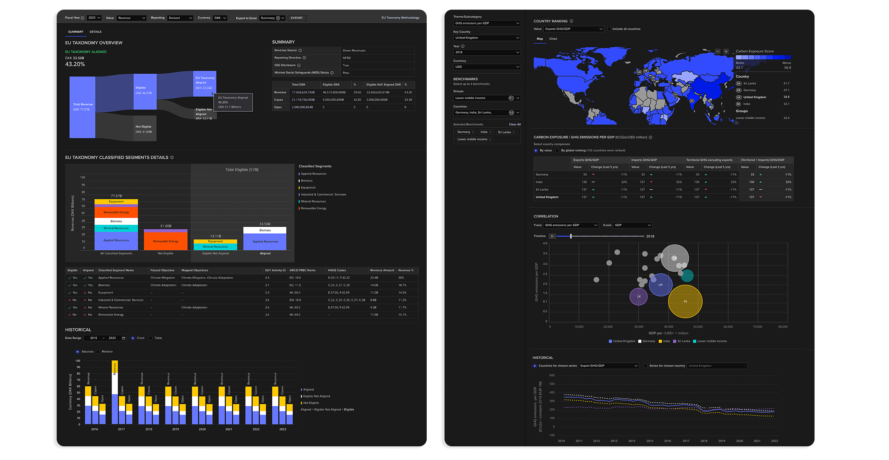

Back

As product designer I contributed to several applications within LSEG Workspace platform (Market data product) such as Beyond Ratings, Codebook, ETF Screener, and Securities Data Company (SDC) Platinum. My work focused on introducing new features and user enhancements that aligned with organisational goals and improving various workflows to help user efficiently.
I also led the end-to-end design and delivery of sustainable finance applications, most notably Green Revenues and EU Taxonomy. I played a key role in conceptualising and refining these solutions to ensure a seamless and intuitive user experience.
FTSE Russell Green Revenues
The FTSE Russell Green Revenues Data Model provides investors with a highly granular and flexible dataset circa 20,000 public equities for revenue exposure to the green economy. It identifies any company with revenues derived from green products and services and classifies the "greenness" of those goods based on the FTSE Russell Green Revenues Classification System (GRCS).

Challenge
The original dataset was purely tabular, offering limited visibility into trends or patterns without deep manual inspection. I saw this as an opportunity to transform this static data into an engaging and actionable dashboard that allows users to explore and analyse trends, outliers, and key insights easily.
Process
Understanding User Needs:
Conducted interviews with both business stakeholders and end-users to understand their pain points with the current dataset presentation and what insights they aimed to extract.
Card sorting exercise with key stakeholders to decide on its structure and capture any additional business requirements
Data Exploration:
Before diving into the design, I explored the dataset in-depth, understanding its structure and finding potential insights that could drive valuable interactions. The data consisted of key dimensions: Industry sectors, sub-sectors, mirco-sectors, tiers. This exploration helped me identify which visualisations would work best to communicate different aspects of the data.
Wireframing & Conceptualisation:
Next, I sketched out various layouts and interactions. Visualising how users could interact with the dataset. The focus was on creating a clean and modular interface that allowed for both high-level overviews and deep dives into the data.
Key Features Introduced:
- Dynamic dashboard: Aggregated key metrics (such as tiers and sectors) and incorporated charts to help users quickly identify areas of interest.
- Filter & comparasion tools: Allowed users to filter and compare with other companies, by market cap, region, sector and more.
- Analysis: Provides additional insights with peer comparsions and overlaying other datasets like ESG.
Prototyping & Usability Testing:
Using an internal feedback loop by conducting multiple internal reviews with stakeholders and team members. This helped identify usability issues early, such as confusing chart interactions and inconsistent filter behavior. Incorporating this feedback, I iterated on the prototype to improve the clarity and ease of use.